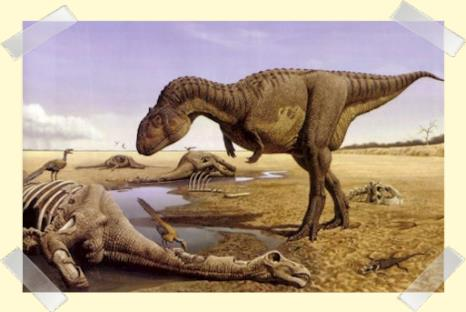
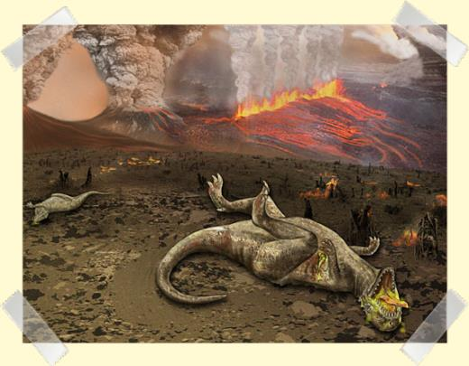
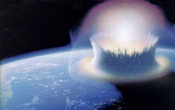
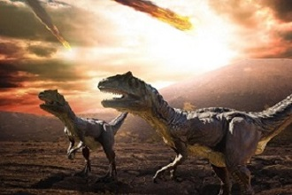
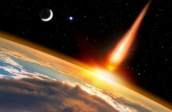

Extinction
Les dinosaures ont disparu de la surface de la Terre il y a 65 millions d'années. Il existe trois théories sérieuses sur leur disparition :
- Des régressions marines importantes (la mer se retire et la surface des terres émergées augmente) auraient apporté des changements climatiques majeurs.

- L'éruption d'un supervolcan (les trapps du Deccan, en Inde d'une surface grande comme la France) provoquant un cataclysme planétaire en modifiant le climat et en plongeant la Terre dans l'obscurité par le biais de nuages de cendres.

- La chute d'une météorite de plusieurs dizaines de kilomètres de diamètre plongea la Terre dans l'obscurité et le froid. Une telle collision aurait produit une épaisse couche de poussière, occultant la lumière du soleil pendant des mois ou des années. Les plantes auraient cessé de pousser, privant les herbivores de nourriture. À leur tour, les carnivores auraient manqué de proies. Localisation : cratère de Chicxulub au Mexique daté de –65 millions d'années et découvert en 1993.


